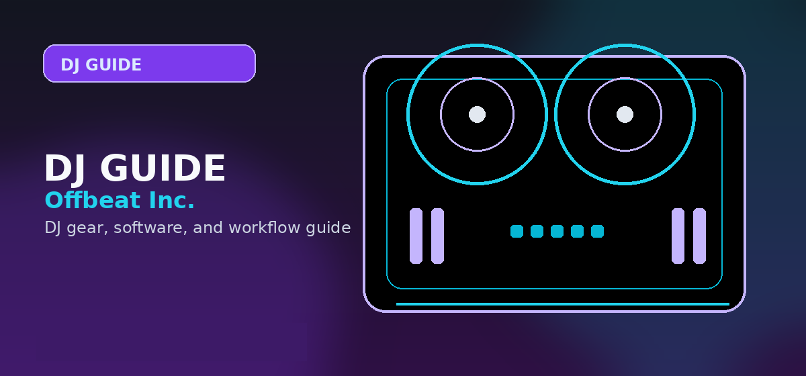

Best Audio Interface for DJs 2026: Buyer's Guide
Do DJs need an audio interface? Full guide to the best audio interfaces for DJs — Focusrite Scarlett, Native Instruments, and budget picks compared.

Disclosure: This page uses affiliate links. We may earn a commission at no extra cost to you. Full disclosure →
In 2026, the audio interface remains the unsung hero of every DJ booth and production studio. Whether you're recording vocals, routing DJ mixes, or tracking a full band, the right interface can make the difference between muddy, latency-filled chaos and clean, punchy, professional sound. This guide walks DJs and producers through selection criteria, setup tips, and model comparisons so you can confidently pick the right interface for your needs.
Why the Right Audio Interface Matters
Good audio conversion and reliable low-latency monitoring are essential for live performance and studio production alike. Interfaces control analog-to-digital (A/D) and digital-to-analog (D/A) conversion, preamp quality, driver stability, and I/O flexibility. For DJs, features like dedicated headphone outputs, loopback, and robust build for road use are essential. Producers need clean preamps, multiple inputs, and low-latency monitoring for tracking.
Key Specs to Watch
- Bit depth and sample rate: 24-bit/48–192 kHz supports high-resolution audio.
- Latency: Measured in ms; lower values are essential for live monitoring and tight DAW playbacks.
- Preamps: Quality mic preamps improve vocal and instrument capture.
- I/O: Number and type of inputs/outputs (XLR, TRS, MIDI, S/PDIF, ADAT) determine expandability.
- Bus-powered vs. bus-and-DC: Bus power is convenient, but external power often increases stability for multi-channel rigs.
Interface Types and When to Use Them
USB-C / USB 3.0
Most consumer and prosumer interfaces use USB-C in 2026 for stable, high-bandwidth connections. Ideal for single-computer setups and mobile producers.
Thunderbolt
For studios requiring ultra-low latency and high channel counts, Thunderbolt offers superior throughput and driver performance—favored by high-end producers.
Networked / AVB / Dante
Large setups, clubs, and broadcast rigs benefit from Dante or AVB for multi-room routing and scalable channel counts.
Comparison Table: Popular Picks for DJs and Producers (2026)
| Model | I/O Highlights | Latency / Drivers | Best For | Price Range |
|---|---|---|---|---|
| Focusrite Scarlett 4i4 | 2 XLR/Line, 2 TRS outputs, loopback | Low on USB-C, stable | Beginner DJs, home producers | $150–$250 |
| Universal Audio Apollo Twin X | Elite converters, DSP, Realtime UAD | Ultra-low on Thunderbolt | Producers, tracking with plugins | $900–$1200 |
| RME Babyface Pro FS | Pristine I/O, TotalMix FX, stable drivers | Very low, industry benchmark | Studio pros, live performers | $900–$1300 |
| MOTU M4 | Transparent preamps, superb metering | Low-latency USB-C | Budget-conscious producers | $150–$250 |
| Native Instruments Komplete Audio 6 | Solid I/O, MIDI | Low, plug-and-play | Beatmakers, NI users | $200–$300 |
Choosing by Use Case
DJs on the Road
Prioritize rugged build, two stereo outputs (for booth and main), a dedicated headphone output with a cue mix, and loopback for streaming. Bus-powered units with good driver support and a small footprint are preferred for mobile DJs.
Bedroom Producers
Look for clean preamps, at least two inputs for mic and instrument, MIDI I/O if you use hardware synths, and bundled software (DAW, plugins) to get started quickly.
Hybrid DJ/Producer
Hybrid artists need both live routing (loopback) and multi-channel recording. An interface with multiple line inputs, DAW-friendly driver stability, and flexible monitoring options fits best.
Setup Tips for Low Latency and Reliability
- Install the latest drivers from the manufacturer and use the recommended firmware.
- Optimize your DAW buffer: lower for tracking, higher for mixing with many plugins.
- Use direct monitoring when recording live to avoid round-trip latency.
- When possible, prefer Thunderbolt for critical low-latency studio work; USB-C is fine for most other scenarios.
Monitoring and Cueing for DJs
Ensure your interface supports split cueing (separate cue mix vs. main mix) and offers a dedicated headphone volume control. If your software expects loopback (for live streaming), verify the interface’s loopback implementation—some are simpler than others and may require virtual audio routing.
Our Top Picks on Amazon
- Best All-Rounder: Focusrite Scarlett 4i4 on Amazon — road-ready I/O and loopback for streaming.
- Best Pro Interface: Universal Audio Apollo Twin X on Amazon — studio-grade conversion with UAD DSP plugin offload.
Final Checklist Before You Buy
- Confirm driver compatibility with your OS (Windows, macOS, or Linux).
- Verify the I/O you need now and for future expansion (ADAT, S/PDIF, or extra preamp channels).
- Test or read reviews focusing on driver stability and real-world latency.
- Consider bundled software value if you’re getting started.
Choosing the right audio interface in 2026 is about balancing connectivity, conversion quality, and portability. For DJs, ruggedness, cueing, and loopback matter most; for producers, conversion and driver stability lead the list. With this guide, you should be able to match the right interface to your workflow and budget, ensuring your mixes and performances sound their best.
Pro Tips Before You Decide
- Use free trials fully — spend the entire trial period on the specific workflow you plan to use long-term, not just exploring features
- Check recent reviews — software and gear receive regular updates; look for reviews or Reddit posts from the last 3-6 months
- Budget for accessories — cables, stands, carrying cases and replacement pads/needles add 10-20% on top of the main purchase price
- Join the community early — getting active in subreddits and Discord servers before purchasing gives you direct access to current owner feedback
- Plan your setup holistically — whichever product you choose, make sure it integrates cleanly with the rest of your gear and software ecosystem
Frequently Asked Questions
Do DJs need an audio interface?
DJ controllers have built-in audio interfaces — you do not need a separate one for standard DJ setups. You need a standalone audio interface when: (1) connecting turntables with timecode vinyl to DJ software, (2) recording mixes with low latency to software like Audacity or Logic, or (3) using studio-quality headphone monitoring with a mixer that lacks a headphone output.
What audio interface is best for timecode vinyl DJing?
The Native Instruments Audio 6 MK2 ($199) and Audio 10 ($349) are purpose-built for timecode vinyl. They include phono preamps (required to amplify cartridge signals) and low-latency ASIO drivers. The Focusrite Scarlett 4i4 ($219) works with a separate phono preamp. Avoid USB interfaces without phono preamps for timecode setups.
What is audio interface latency and why does it matter for DJs?
Latency is the delay between audio input and output. For timecode vinyl DJing, high latency (>10ms) makes scratch movements feel disconnected from the sound — like dragging a cursor through mud. A good audio interface achieves 3–6ms round-trip latency with ASIO drivers on Windows or Core Audio on Mac. USB interfaces without ASIO drivers can exceed 30ms, which is unusable for scratching.
Can I use a standard audio interface as a DJ mixer?
No — an audio interface routes audio between your computer and speakers/headphones but cannot perform the mixing functions of a DJ mixer (crossfader, EQ, gain control per channel). For DJ use, the interface works alongside your software (Serato, Traktor) which performs the mixing in the computer.
How many channels does a DJ audio interface need?
For timecode vinyl with two turntables: minimum 4 inputs (2 stereo phono channels) and 4 outputs (master + booth/headphone). For two turntable decks + a standalone mixer: consider a 6-channel interface (Native Instruments Audio 6). A standard 2-in/2-out interface is adequate for recording mixes but insufficient for live timecode DJing.